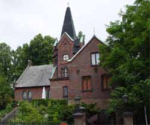
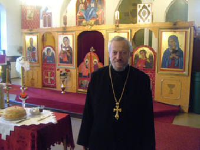
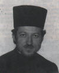
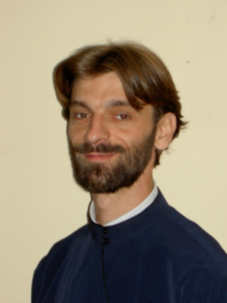

Историјат
Парохија Св. Василија Великог основана је 1.јануара 1990 год. за време службовања тадашњег свештеника о. Методија Лазића. Иако је парохија била основана, није било места за служење, па је о.Методије био принуђен да се сели на разне локације и по разним шведским црквама само да би успео да одржи континуитет редовног служења. И тако све до 1992 кад су Срби са својим свештеником изнајмили једну салу у улици Мotorg. 5. Исте године епископ британско-скандинавски Г.Доситеј извршио је освећење новог иконостаса и капеле.
Од тог тренутка наш народ добија своје место за стална богослужења. Међутим ово је било само привремено решење, јер је о.Методије имао увек у плану да се што пре дође до праве цркве. Али због његовог здравственог стања одлази у пензију, а парохију преузима о.Љубо Кудрић, који је службовао у Хелсингборгу око годину и по дана.
Доласком о. Емилијана Мрђе на парохију хелсингборшку преговоре које је започео о. Методије, завршава, и тако Срби из Хелсингборга и околине купују садашњи храм од Финских Методиста. После тога се приступило комплетном реновирању јер је зграда била прилично запуштена, и наравно прилагођавању за православно Богослужење. Мало освећење је обављено 20. октобра 1996 године на Св. Архијерејској Литургији коју су служили епископи британско - скандинавски Г.Доситеј и епископ банатски Г.Никанор са свештенством. 1998 године на парохију хелсингборшку долази из Енглеске Прота Вајко Спасојевић, који је за време од 5. година проведених на овој парохији успео да са благочестивим народом ( иако је имао проблема са појединим групама наших људи) цркву комплетно преуреди, делимично ослика и отплати комплетан кредит. 30. јануара 2003 године на нашу парохију из Норвешке долази свештеник прота Драган Предић, а прота Вајко одлази на нову дужност свештеника за Норвешку и Исланд.


Први парох о.Методије Лазић
Синђел Методије ( Лазић ) свештеник од кога је све почело Он је основао нашу парохију и уједно био њен први парох. Службовао је од 01.01.1990 - 30.09.1993.

Јереј Милан Гардовић, је провео свега месец дана јер је због потребе службе био премештен на другу парохију. У Хелсингборгу је боравио од 01.03.1993 - 31.03.1993
